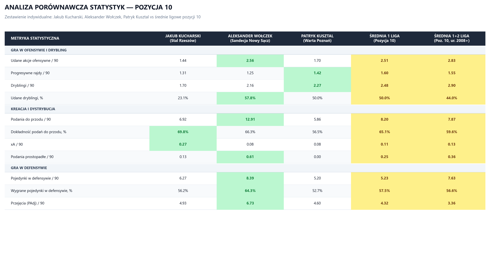

| Metryka Statystyczna | Jakub Kucharski | Aleksander Wołczek | Patryk Kusztal | Średnia 1 Liga | Średnia 1+2L (ur. 2008+) |
|---|---|---|---|---|---|
| GRA W OFENSYWIE I DRYBLING | |||||
| Udane akcje ofensywne / 90 | 1.44 | 2.56 | 1.70 | 2.51 | 2.83 |
| Progresywne rajdy / 90 | 1.31 | 1.25 | 1.42 | 1.60 | 1.55 |
| Dryblingi / 90 | 1.70 | 2.16 | 2.27 | 2.48 | 2.90 |
| Udane dryblingi, % | 23.1% | 57.8% | 50.0% | 50.0% | 44.0% |
| KREACJA I DYSTRYBUCJA | |||||
| Podania do przodu / 90 | 6.92 | 12.91 | 5.86 | 8.20 | 7.87 |
| Dokładność podań do przodu, % | 69.8% | 66.3% | 56.5% | 65.1% | 59.6% |
| xA / 90 | 0.27 | 0.08 | 0.08 | 0.11 | 0.13 |
| Podania prostopadłe / 90 | 0.13 | 0.61 | 0.00 | 0.25 | 0.36 |
| GRA W DEFENSYWIE | |||||
| Pojedynki w defensywie / 90 | 6.27 | 8.39 | 5.20 | 5.23 | 7.63 |
| Wygrane pojedynki w defensywie, % | 56.2% | 64.3% | 52.7% | 57.5% | 56.6% |
| Przejęcia (PAdj) / 90 | 4.93 | 6.73 | 4.60 | 4.32 | 3.36 |
